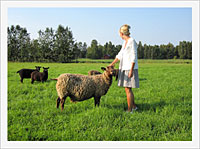

Klicka här för att kontakta mig
 Du kan använda bilder för att förstärka ett budskap eller göra webbplatsen mer attraktiv och lättnavigerad. Bilder kan du skapa du själv i ett bildbehandlingsprogram som tex Photoshop. Har du en fotoskrivare eller digitalkamera medföljer ofta ett redigeringsprogram för att bearbeta och överföra bilden till din dator. Det finns många bildarkiv och webbplatser som tillhandahåller färdiga fotografier och illustrationer som du kan använda på din webbsida. Alla bilder omfattas avv upphovsrätten. Ofta får du använda den pricat och inte i kommersiellt syfte. Om du "lånar" en bild från en hemsida så är det olagligt om du inte får tillåtelse från den som har upphovsrätten till bilden.
En platshållare kan användas när en länk ska leda till ett avsnitt i dokumentet.